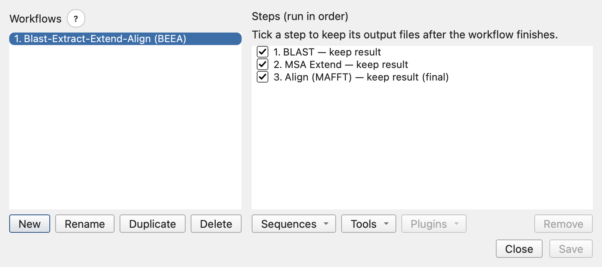
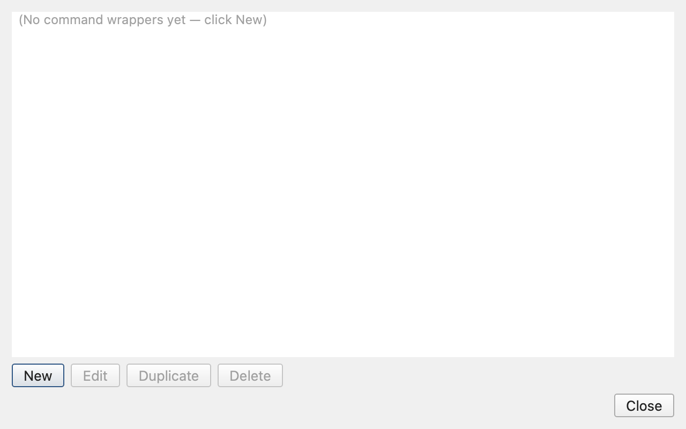

Chapter 13Automation
13.1Workflows
Workflows → Design and manage your workflows
A workflow chains tools so that a multi-step pass runs as one action. If you always follow BLAST with MSA Extend and Align, make it a workflow and run it on many files at once. Each step uses that tool's saved settings, so set the parameters in the tool's own window first.

- The list on the left holds your workflows. New, Rename, Duplicate and Delete manage them. Blast-Extract-Extend-Align (BEEA) is built in.
- The right side lists the steps in the order they run. Add steps from the Sequences, Tools and Plugins menus; Remove deletes the selected step.
- Tick a step to keep its output files after the workflow finishes; unticked intermediate files are removed. The last step's result is always kept.
- Save stores the workflow. It then appears in the Workflows menu: select files and choose it to run.
Steps only connect when the output of one fits the input of the next (for example, BLAST makes FASTA that Align takes). Tools that make reports or plots (TE-Aid, Dotplot) end a workflow. Steps that need the genome do not run until a reference genome is set.
13.2Plugins
Tools → Plugin (Beta) → Manage plugin
Plugins add tools written in Python that use the same file selection, progress bar and output highlighting as the built-in ones. A plugin receives the selected files and the project (genome, databases, thread count) and returns the files it made.
Add installs a plugin package: a folder with a pyproject.toml, or a
.whl file. Installed plugins appear under Tools → Plugin (Beta) and can be
put on the toolbar.
See PLUGINS.md for the programming interface and
PLUGINS_TE_BENCHMARK.md for a worked example;
example plugins are in the repository's examples/ folder.
13.3Command wrappers
Tools → Command wrapper → Manage wrapper
A command wrapper turns any command line you use often into a RepeatViewer tool, without writing code. Click New, give the wrapper a unique name, an optional tooltip, and the command, using these placeholders:
| Placeholder | Filled with |
|---|---|
${RV_INPUT} |
Full path of the first selected file |
${RV_INPUTS} |
Full paths of all selected files, separated by spaces |
${RV_GENOME} |
Full path of the reference genome (empty if none) |
${RV_FOLDER} |
The folder shown in the Files panel |
${RV_OUTDIR} |
Where to write: the folder of the selected file |
${RV_STEM} |
File name without its last extension (TE123.fasta → TE123) |
${RV_NAME} |
File name with its extension |
Example:
blastn -query ${RV_INPUT} -db ${RV_GENOME} -out ${RV_OUTDIR}/${RV_STEM}_b.txt -evalue 1e-5 -outfmt 6
You can also define your own variables (shown as fields when the wrapper runs) and declare which output files the command makes, so they are highlighted and opened like the outputs of built-in tools. Wrappers appear under Tools → Command wrapper and can go on the toolbar.

13.4Command line
repeatviewer [-i FOLDER] [-g GENOME.fa]
| Option | Meaning |
|---|---|
-i, --input-dir |
Folder to open at start |
-g, --genome |
Reference genome FASTA |
--version |
Print the version and quit |
From a source folder, python RepeatViewer.py works too. Folders, layout,
genome and settings are remembered between sessions, so the options are for
scripted or repeated launches.